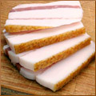

Природа сделала так, что практически любой продукт питания может принести питающемуся пользу. Однако мы не можем не делать из еды культа. Представляем очередной тому пример, в котором речь пойдет о пользе сала для профилактики и лечения целого ряда заболеваний.
Природа сделала так, что практически любой продукт питания может принести питающемуся пользу. Однако мы не можем не делать из еды культа. Представляем очередной тому пример.

В Рунете и Укрнете постоянно появляются статьи о пользе свиного сала для профилактики и лечения ряда нозологий. И даже не просто о пользе, а о единственно возможном и наиболее быстром способе избавиться от недугов. В частности, сообщается, что свиное сало является прекрасным желчегонным средством. Сало также активно рекомендуется в качестве лекарства для снижения уровня холестерина в крови. При этом неизвестные исследователи рекомендуют для оптимизации эффекта сала в отношении гиперхолестеринемии сочетать его с чесноком. Именно это и есть рецепт успеха. Проводя регулярную профилактику, любой желающий сможет оздоровить свои сосуды, сердце и печень. Печень, если вы не знали, значительно оздоравливается, если в рацион питания ежедневно включать сало.
Другая ипостась сала — это его применение в токсикологии. Природный продукт, оказывается, идеально подходит для связывания радионуклидов и выводит другие токсины из организма. Главное — это регулярность употребления. Само собой, поедание сала рекомендовано как профилактическая мера. Вокруг нас столько волн, радиаций и излучений, что выйти из дома и даже просто оставаться в нём незащищённым для человека стало непозволительной роскошью. А с салом нам нуклиды нипочём.
Применение сала в качестве наружного средства имеет широкий спектр рекомендаций. Эта процедура показана при артралгиях, артозах, артритах любой этиологии, как средство реабилитации после операций и травм опорно-двигательного аппарата. Встречаются указания на выраженный положительный эффект сала при наружной терапии маститов и термических ожогов, поверхностных ран и отморожений. Поражает, что сало эффективно лечит пяточную шпору, снимает зубную боль и излечивает экзему. Достаточно только наружного регулярного применения.
Значительно дальше шагнули в применении сала украинские учёные. Собственно, никто и не удивляется, что в области применения этого лекарственного средства исследователи из Украины впереди планеты всей. Высказано предположение, что сало содержит стволовые клетки! А всем известно, какие перспективы открываются для применения стволовых клеток в медицине 21-го столетия. Неясно, зачем только человеку стволовые клетки свиньи? И как они могут усвоиться при энтеральном применении и какую пользу принесут? Оставим эти вопросы для специалистов-салологов.
Онкология не осталась без внимания. В сале растворяются канцерогены и вместе с ним выводятся из организма, поэтому в схемы лечения и профилактики онкозаболеваний необходимо ввести новый ингредиент — сало, конечно.
Сало также не просто продукт питания, а настоящий энергетический субстрат, на котором держится благополучия всех органов и систем. Это положение основано на том, что оно содержит незаменимые жирные кислоты. Такие вещества человек не может синтезировать и получает извне. Сообщается, что сало содержит в себе линолевую, альфа-линоленовую и арахидоновую кислоты. Это правда, вот примерное процентное содержание этих веществ в свином жире: линолевая — 8% (для сравнения — в подсолнечном масле 59%), альфа-линоленовая — 0,7% (в соевом масле — 10%), арахидоновая — 0,5% (в жире трески до 4%). Где же здесь уникальность сала, как носителя незаменимого материала?
Честно говоря, никто не проводил серьёзных клинических исследований эффективности сала в лечении сердечно-сосудистой и печёночной патологии, не проводил сравнение эффективности и безопасности наружной терапии маститов и артрозов. Но каждый знает, что нет необходимости доказывать неэффективность молотого перца в терапии ожоговой болезни просто на основании некоторых «косвенных» данных.
И если Вам нравится сало, то кушайте его на здоровье, только в меру. Пусть Вас согревает мысль, что Вы не только получаете удовольствие, а ещё и проводите профилактику ряда заболеваний. А если вы ярый противник жирного, то вы получили в свои руки новые аргументы преувеличения роли сала в истории человечества.
В.В. Привольнев
Ссылки: